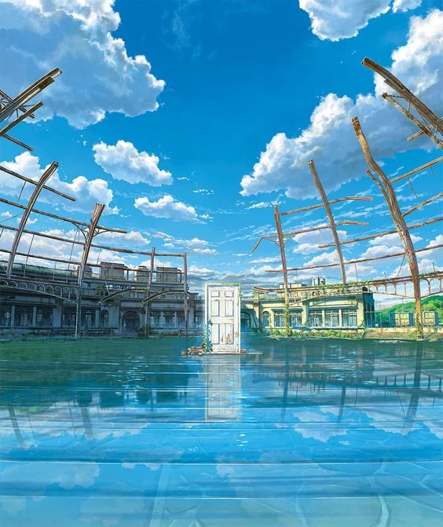
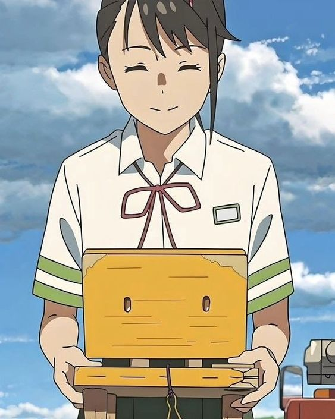
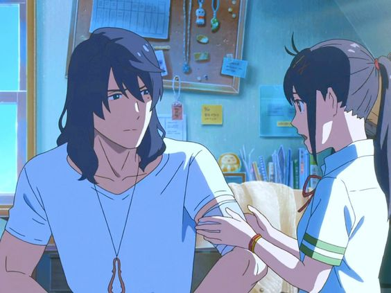

Suzume no tojimari. Makoto Shinkai. Japón, 2022.
Suzume es una adolescente de 17 años que descubre la presencia de puertas de acceso al más allá, territorio donde habitan ancestros y dioses que se manifiestan en un “gusano” difuso en ascenso por los cielos; suerte de energía destructora causante de terremotos. Ella tiene el privilegio de visualizar un fenómeno ajeno al resto de las personas. Conoce a Sota, apuesto joven encargado de cerrar las puertas por donde la energía ancestral se filtra. Juntos compartirán una peligrosa peripecia de la cual saldrán transformados.
Pelicula llena de simbolismos japoneses, donde nos presenta que los humanos y deidades siempre estaran concetadas, toca un punto importante si lo vemos desde un punto ambiental, ocupamos los recursos a nuestro antojo y nunca "agradecemos", damos todo por echo. Esto tambien se aplica para demas cosas, somos peronas interconectadas de alguna forma u otra ignoramos lo que nos rodea y nos olvidamos de apreciar los momentos
A lo largo de la pelicula vemos como Suzume aun carga con el trauma de lo que vivio, ella no vivio de forma correcta el duelo de la perdida de su madre, quedando estancada, aferrandose al recuerdo de su madre, no dejandola ir, causandole dolor
Suzume debe atravesar su puertaa, esa puerta que abruio de niña, nadie más puede hacerlo. Nosotros somos los unicos capaces de afrontar nuestro pasado. "Siempre te tendras a ti mismo". Suzume en esta escena, le da consuelo y alienta a su niña del pasado, desde mi punto de vista, sano a su niño interior lo que hace aun más especial la escena
"A pesar de lo triste que estés ahora, un día vas a crecer va a llegar ese día. Aí que no te angusties, el futuro no es aterrador, ye vas a enamorar de alguien en algún momento y conoceras a muchas personas que te van a querrer mucho. La noche parece interminable por ahora, pero un día va a amanecer y vas a crer bañandote en esa luz, no tengo duda de eso "